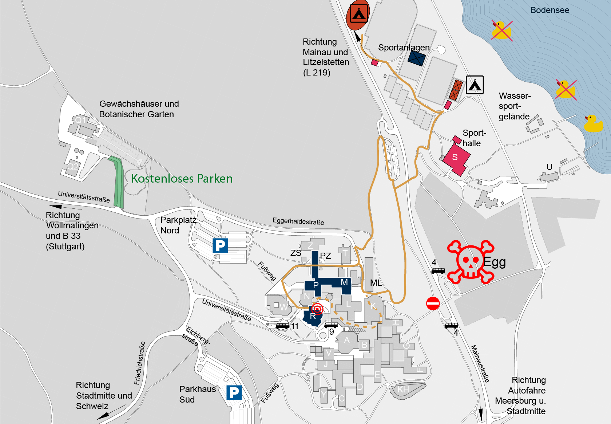

In der Uni
 Die meisten Seminarräume für Arbeitskreise sind in den Gebäuden P und M zu finden. Das Plenum findet im Hörsaalgebäude R in Raum R711 statt, auf der Rückseite dieses Gebäudes findet sich auch der Fenstereingang zum Tagungsbüro in R501. Wichtig ist auch das K-Gebäude, in dem sich die Mensa befindet und ein phänomenaler Ausblick über den See. Während der ZaPF essen wir meistens im P-Gebäude auf Ebene 6. Hierbei ist zu beachten, dass die Nummerierung der Ebenen sich nicht am Haupteingang orientiert, sondern an der untersten Ebene durch die man in die Uni kommt. Da die Uni auf einer Schräge gebaut ist, ist dadurch der Haupteingang und das Foyer auf Ebene A5, das R-Gebäude startet bei Ebene 5 (das Tagungsbürofenster ist also ebenerdig, also keine Angst ihr müsst nicht klettern) und das P Gebäude betritt man meist über eine Treppe an der N-Bibliothek vorbei auf Ebene 6, auf der sich auch der Fachschaftsraum befindet.
{kind=link}
Bei der ZaPF am See werden die meisten Veranstaltungen und Arbeitskreise im P- und M-Gebäude der Universität stattfinden. Die Möglichkeit zu Schlafen werdet ihr in großen Veranstaltungszelten mit Holzboden haben. Keine Angst, falls es zu kalt wird, kann man sicher auch irgendwo Heizstrahler auftreiben. Und da es nichts besseres gibt, als morgens aus dem Zelt zu kriechen und ins Wasser zu fallen, befinden sich die Zelte am Wassersportgelände der Uni. Dieses ist ca. 15 Minuten Fußweg vom P-Gebäude entfernt.